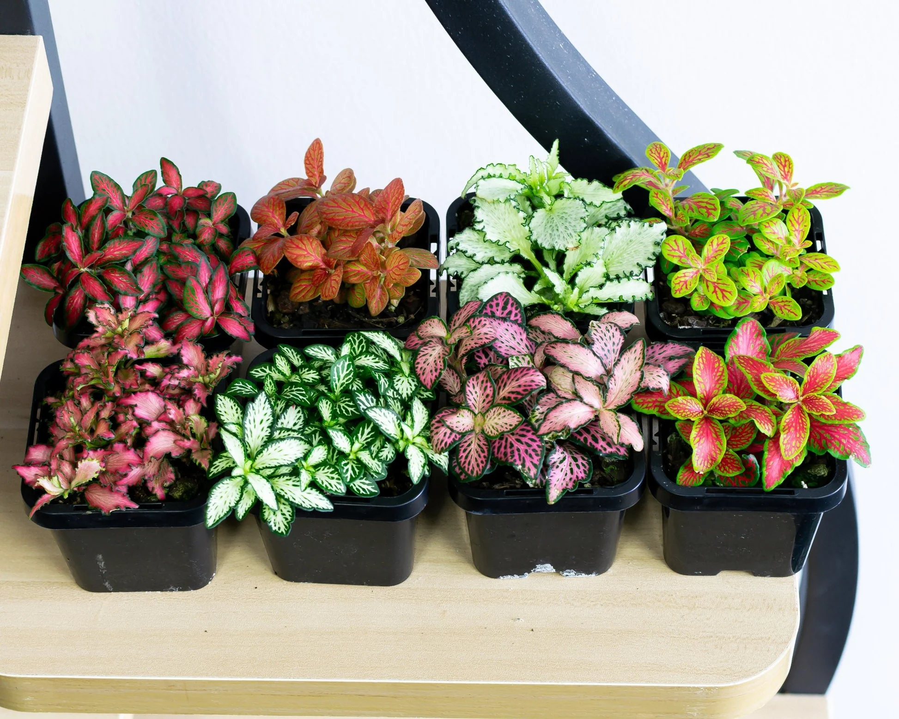

Como cualquier persona con esta afición, tengo mi top 5 de plantas de interior que pueden usarse tanto en terrarios como en macetas normales para dar belleza a nuestras casas. Así que voy a explicar por qué me gusta cada una y sus ventajas y desventajas.
1. Fittonia
En el top 1, para sorpresa de nadie que lea esta web, pongo a la Fittonia. Es una planta preciosa con una variedad enorme de colores y formas según va creciendo. La hay desde hojas verdes con venas blancas, hasta hojas moradas-rosáceas con venas verdes, cada una más bonita que la anterior.
Como ya he dicho en los otros artículos, requiere de muy pocos cuidados, ya que resiste genial el calor, pero hay que intentar que esté en un ambiente que supere los 15ºC, ya que con el frío empieza a sufrir y puede ponerse mala o tirar las hojas. Aguanta bien en zonas poco iluminadas aunque prefiere las zonas con mucha luz pero nunca con sol directo.
Respecto al riego, le gusta mucha humedad constante en sus hojas y también en sus raíces. Gracias a que yo la uso en terrarios, en invierno puedo olvidarme perfectamente de regarla ya que el ecosistema mantiene la humedad, y en verano están perfectamente si pulverizo 1 o 2 veces por semana. Además resiste mucho a plagas aunque puede verse afectada por los pulgones. Por eso mismo siempre que vayamos a comprarla en un vivero o en un bazar debemos de ver bien sus hojas y tallo y fijarnos que no hay ningún puntito negro.

La gran variedad de Fittonias hace que sean la joya de cualquier terrario.
2. Musgo (Sphagnum o de Java)
Mi segunda planta favorita es el musgo. Su función en el ecosistema y en los terrarios es vital: mantener la humedad del suelo, evitar que se degrade y además hace de refugio para invertebrados pequeños. Es decir, que va a ser la casa perfecta para nuestros colémbolos o bichos bola, algo que nos viene de lujo.
Ventajas: Estéticamente crea un "efecto césped" precioso, retiene agua como una esponja (literalmente) y previene la aparición de moho en el sustrato.
Desventajas: Si lo usas en una maceta abierta en el salón, se te secará rapidísimo. Además, es muy exquisito con el agua: si lo riegas con agua del grifo normal, el cloro y los minerales acabarán quemándolo y se pondrá marrón. ¡Usa siempre agua destilada o de lluvia!
3. Ficus Pumila (La trepadora)
Esta es la planta que tienes que elegir si quieres que tu terrario deje de parecer un tarro de cristal y empiece a parecer un trozo de selva salvaje. Es una enredadera de hojas muy pequeñitas que se agarra a cualquier superficie.
Ventajas: Crece increíblemente rápido si tiene la humedad adecuada. En pocos meses es capaz de tapizar por completo el fondo o las paredes de cristal de tu terrario, dándole un aspecto espectacular y muy frondoso.
Desventajas: Precisamente su velocidad. Si no la vigilas y le vas pegando tijeretazos de vez en cuando, acabará asfixiando a la Fittonia y al resto de plantas. Además, las raicillas que usa para pegarse al cristal pueden dejar marcas si algún día decides arrancarla.
4. Helechos (Especialmente el Culantrillo)
No podía faltar un buen helecho. Son plantas antiquísimas y aportan una textura súper fina y elegante que contrasta genial con las hojas más grandes de las otras plantas.
Ventajas: Son los reyes de los terrarios cerrados. Aman la humedad ambiental por encima del 80% y no necesitan demasiada luz para estar verdes y espectaculares.
Desventajas: Fuera de un terrario, en una maceta normal de salón, son unas auténticas "reinas del drama". Si te olvidas de regar un par de días y la tierra se seca, sus hojas se volverán de papel crujiente y no habrá marcha atrás.
5. Pothos (Epipremnum aureum)
Para cerrar la lista, la clásica entre las clásicas. Puede que sea una planta muy vista, pero si todo el mundo tiene una en su casa, es por un buen motivo.
Ventajas: Es literalmente indestructible. Aguanta en rincones oscuros, sobrevive si te olvidas de regarla, y si cortas un trozo y lo metes en un vaso de agua, echará raíces en cuestión de días. Es la planta perfecta para empezar y dar vida a estanterías altas dejándola colgar.
Desventajas: Crece demasiado y sus hojas se hacen muy grandes para usarse en un terrario cerrado (a menos que el terrario sea del tamaño de un acuario enorme). Por eso, esta la dejo estrictamente para macetas normales en el salón.